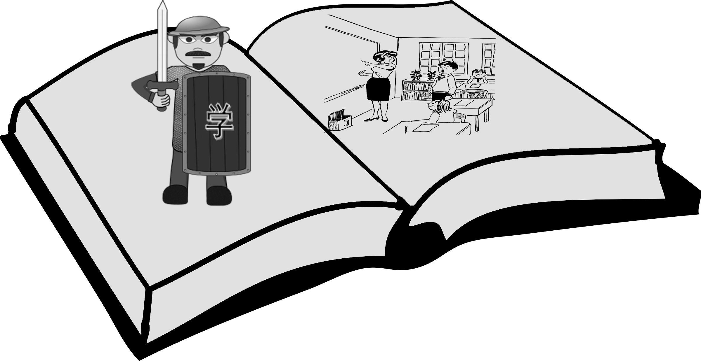

In this section you will find activities/lessons/curriculum that I designed throughout the years in both the Chinese and English as a Foreign Language Classroom. I am currently only posting a sample of what I have created and will slowly add more material as I have time.
The following activities are taken from a first year Chinese course at the university level. Each of the zip files contains a power point and 1-2 handouts. Generally speaking one of the handouts will have a listening exercise in which new vocabulary/sentence structure is introduced. In the listening activities I use the powerpoints to tell a story or to discuss a topic. For example in the professions lesson I talk about the qualities of each professesions (i.e. Being a writer can relaxing but lonely.). The handouts are used for students to keep track of what is said during the presentation. The speaking handout is usually a lesson that asks students to reproduce some version of what they heard in the listening activity. More details for each individual lesson will be provided later.
In 2014, I designed a graded reader series for learners of Chinese as a foreign learner. The stories consist of four parts. In the first part, all new words are presented in the English (the learners L1). This was done to provide true beginners of Chinese with background information on the characters as well as to allow learners a chance to see characters in a familiar, stress-reduced environemnt. In the second section, there are writing activities to allow learners to again familiarize themselvs with new characters. In the third section is the reading or the text. Then in the final section a series of questions and tasks are presented to the reader to review both the content and the vocabulary learned in the reading. The story is about a brother and sister who find some items missing from their school and then try to find the culprit. This was my first attempt at creaing a reading series so forgive any typos, or bad story lines. If you have any suggestions or would like to cooperate on future reading please email me at frdbrick@gmail.com.
This section includes my teaching philosophy as well as some powerpoints that I created from past presentations. I will continue to update this as more things come in. This teaching philosophy relfects my beliefs on both teaching Chinese as a foreign language as well as on teaching second language acquisition courses. Teaching Philosophy This presentation discusses a framework for designing games and then provides examples of games that fit the definition and that would be good for L2 instruction. UFLA 2018 – L2 Gaming This presentation discusses the value of story-driven games and then provides a list of story-driven games that can be used in the L2 Classroom. UFLA 2017 – Story Driven Games This presentation provides an overview of the findings from my research on the graded readers posted above. Graded Readers Presentation This is presentation provides an overview on a study I conducted in 2014 comparing three different approaches to teaching Chinese characters to true beginners of Chinese. Three Approaches to Chinese Character Instruction This is my first conference presentation and it contains a list of ideas for integrating reading activities into the communicative classroom. Reading in the Communicative Classroom
These are papers that I wrote at some point for another but never got around to publishing them anywhere.
This is a short paper and lesson plan using concept-based instruction to teach intermediate Chinese learners the difference between 就(Jiu) and 才(Cai) Using Concept-Based Instruction in the Chinese as an L2 Classroom: “jiu” and “cai”
In this paper I critique past models on compliement responses and then provide an argument for how compliment responses should be viewed using The Rapport Management Model. I conclude the article with a lesson plan illustrating how my model applies to the classroom. Whose pragmatics are we talking about?: A lesson plan on compliment responses